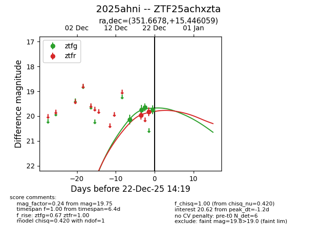
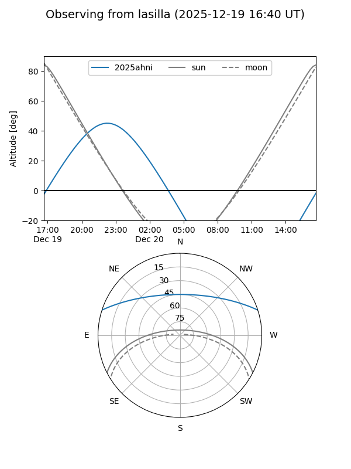
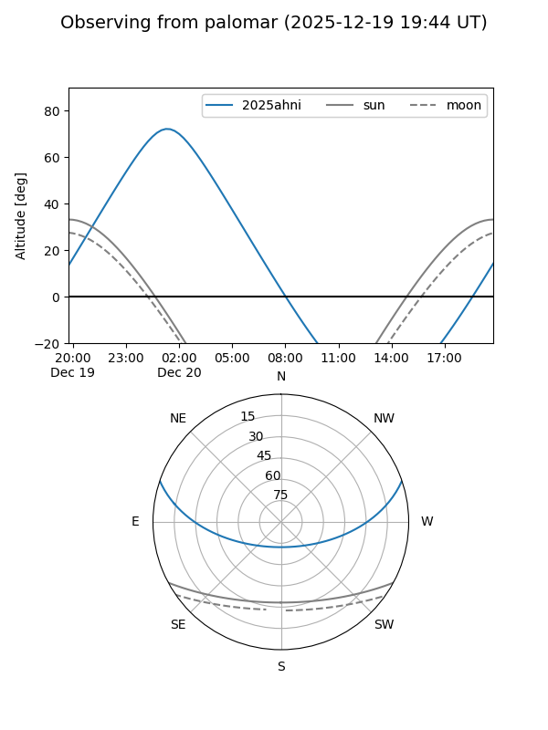

2025ahni
Target 2025ahni at 2025-12-22 14:21
Aliases and brokers:
FINK: fink-portal.org/ZTF25achxzta
Lasair: lasair-ztf.lsst.ac.uk/objects/ZTF25achxzta
ALeRCE: alerce.online/object/ZTF25achxzta
TNS: wis-tns.org/object/2025ahni
YSE: ziggy.ucolick.org/yse/transient_detail/2025ahni
alt names
ZTF25achxzta (ztf,fink_ztf)
2025ahni (tns,yse)
Coordinates:
equatorial (ra, dec) = 351.6678,+15.44606
equatorial (HMS+DMS) = 23:26:40.28,+15:26:45.81
galactic (l, b) = (94.6214,-42.71797)
Flags:
Photometry:
last ztfg=19.75, ztfr=19.83
4 ztfg, 2 ztfr detections
Lightcurve

Visibility


Additional plots